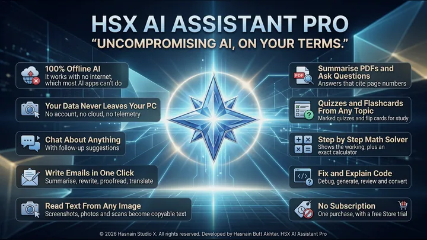
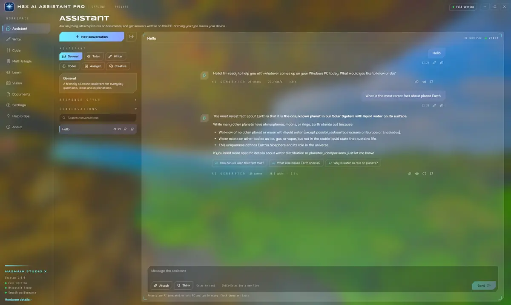
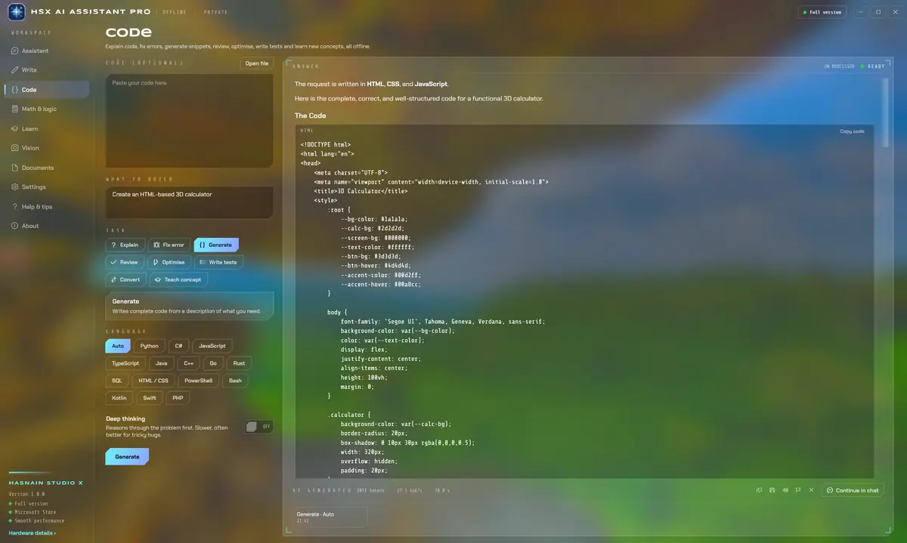
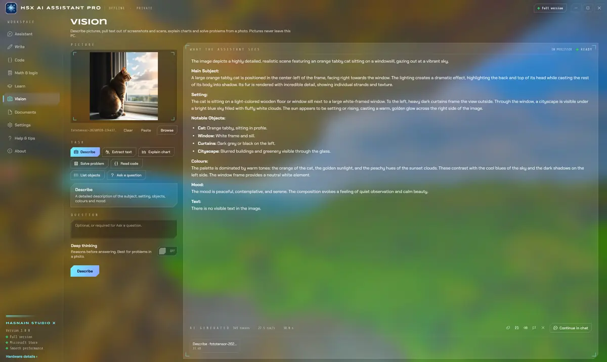
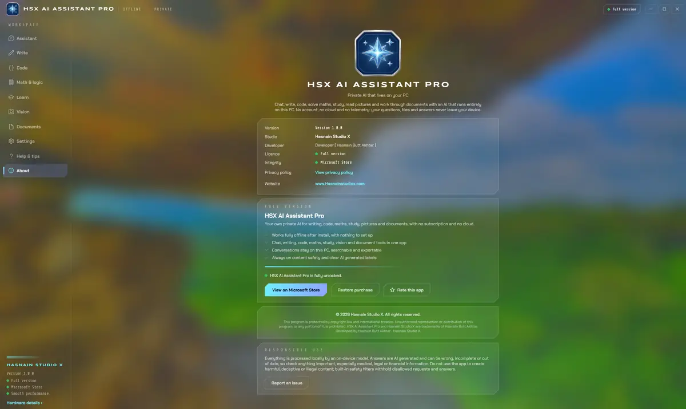

HSX AI Assistant Pro
Private AI that lives on your PC
An AI assistant that runs entirely on your PC. Chat about anything with follow-up suggestions, write and rewrite emails, explain, fix and generate code, work through maths step by step, study with marked quizzes and flashcards, read the text and detail in a picture, and ask questions of a PDF with answers that cite page numbers. The model works on your own hardware, the app makes no internet connections, and there is no account to create.
What HSX AI Assistant Pro does
- Chat about anything, in six assistant styles with follow-up suggestions
- Write, summarise, rewrite, proofread and translate in one click
- Explain, fix, generate, review and convert code
- Step by step maths with an exact calculator
- Marked quizzes and flashcards from any topic
- Describe pictures, extract text from scans and explain charts
- Ask questions of a PDF, with answers that cite page numbers
- Fully offline, with no account, no cloud and no telemetry
HSX AI Assistant Pro on screen




HSX AI Assistant Pro running on Windows, captured from the application itself.
Who it is for
HSX AI Assistant Pro is built for students, professionals and anyone who wants an everyday AI assistant without handing their questions and files to a cloud service.
It sits in the AI tools part of the catalogue, and your questions and files never leave the machine to be processed. There is no server behind HSX AI Assistant Pro to send them to.
Local-first, by design
Plenty of the alternatives send your questions and files to a server to be handled. HSX AI Assistant Pro does not. Processing runs on your CPU or GPU, and the conversations, pictures and documents you work with stay where you put them. The application keeps working with the network switched off.
That is not a setting you enable, it is how HSX AI Assistant Pro is built, which is why there is no account to create and no subscription to lapse. Full detail is in the HSX AI Assistant Pro privacy policy.
Technical details
- Platform
- Windows 10, Windows 11
- Distribution
- Microsoft Store
- Availability
- In certification
- Licence
- Free trial, then one purchase
- Network required
- No, works offline
- Account required
- None
- Telemetry
- None
- Publisher
- Hasnain Studio X
- Developer
- Hasnain Butt Akhtar
Questions
When is HSX AI Assistant Pro released?
HSX AI Assistant Pro is with the Microsoft Store, going through certification. No date is promised until it clears. This page will carry the store link the moment it goes live.
Does HSX AI Assistant Pro need an internet connection?
No. HSX AI Assistant Pro does its work on your own device. You can install it, disconnect, and it keeps functioning. A connection is only used by the store itself, for installation and licence checks.
Does HSX AI Assistant Pro require an account?
No. There is no registration, no sign-in and no online identity. You install the application and use it.
What data does HSX AI Assistant Pro collect?
None. There is no analytics, no usage tracking and no crash reporting that leaves your device, and your questions and files are never uploaded. The full detail is in the HSX AI Assistant Pro privacy policy.
Is HSX AI Assistant Pro a subscription?
No. HSX AI Assistant Pro is a free trial followed by a one-time purchase through the Microsoft Store. There is no recurring fee.
Which versions of Windows does it support?
Windows 10 and Windows 11.
Related applications
More of the same kind of tool is listed on local AI apps that run on your own GPU.
Get HSX AI Assistant Pro
HSX AI Assistant Pro is with the Microsoft Store, going through certification. It is not on sale yet. Send a message and I will tell you the day it goes live.
HSX AI Assistant Pro privacy policy · Support and bug reports · Local AI apps · Full catalogue
HSX AI Assistant Pro™ is a trademark of Hasnain Studio X. Hasnain Studio X™ is a trade mark of Hasnain Studio X.